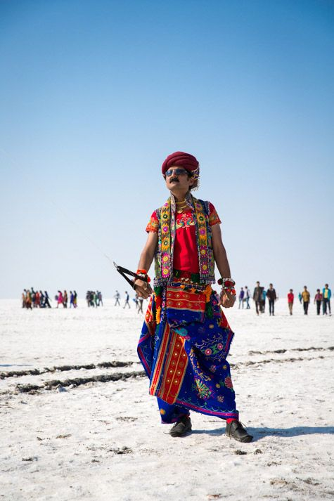

Verdigao
Daman and Diu's culture and traditions are similar to those of Gujarat, and the common language spoken there is Gujarati. The Damania community is a blend of Hindus, Muslims, and Christians, and their socio-cultural life reflects a blend of European, tribal, and Indian heritage. Some famous folk dances of Daman and Diu include Mando, Verdigao, and Vira. The folk music of Diu Daman is called Sanjari.